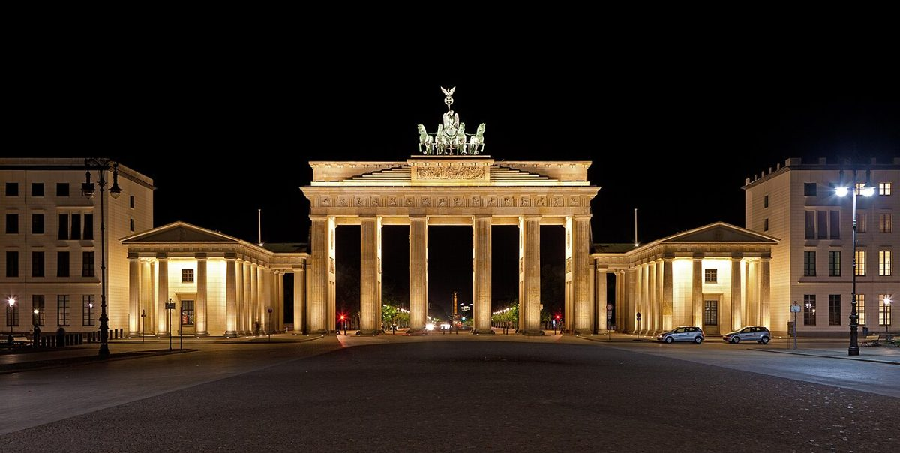

Berlin Brandenburger Tor: Ein Wahrzeichen der Geschichte und Kultur

Das Brandenburger Tor in Berlin ist nicht nur ein Symbol für die deutsche Hauptstadt, sondern auch ein Zeugnis der wechselvollen Geschichte Deutschlands. Als eines der bekanntesten Wahrzeichen Europas zieht es jedes Jahr Millionen von Besucher an. In diesem Artikel erfährst du alles, was du über die Anreise, die beste Reisezeit, die Highlights und kulinarische Genüsse rund um das Brandenburger Tor wissen solltest.
Anreise zum Brandenburger Tor
Das Brandenburger Tor liegt mitten im Herzen Berlins und ist daher einfach zu erreichen. Wenn du mit öffentlichen Verkehrsmitteln anreist, kannst du die S-Bahn oder die U-Bahn nehmen und an der Station Brandenburger Tor aussteigen. Auch zahlreiche Buslinien halten in unmittelbarer Nähe. Wer lieber mit dem Auto kommt, sollte beachten, dass es rund um das Brandenburger Tor nur begrenzte Parkmöglichkeiten gibt. Parkhäuser in der Umgebung bieten jedoch ausreichend Platz.
Beste Reisezeit
Das Brandenburger Tor ist das ganze Jahr über einen Besuch wert. Im Frühling und Sommer kannst du bei mildem Wetter die umliegenden Parks und Plätze erkunden. Im Winter hingegen verwandelt sich das Brandenburger Tor in einen festlich beleuchteten Ort, besonders während der Weihnachtszeit. Um die Hauptattraktion ohne große Menschenmassen zu erleben, empfiehlt es sich, früh am Morgen oder am späten Nachmittag zu kommen.
Highlight 1: Das Brandenburger Tor selbst
Das Brandenburger Tor ist natürlich die Hauptattraktion selbst. Es wurde im 18. Jahrhundert erbaut und ist ein beeindruckendes Beispiel des Klassizismus. Nimm dir Zeit, die Details des Bauwerks zu bewundern und die Atmosphäre dieses historischen Ortes zu genießen.
Highlight 2: Der Pariser Platz
Direkt vor dem Brandenburger Tor liegt der Pariser Platz, einer der bekanntesten Plätze Berlins. Hier findest du neben dem Tor auch weitere beeindruckende Gebäude wie die Akademie der Künste und das Luxushotel Adlon Kempinski. Ein Spaziergang über den Platz ist ein Muss für jeden Besucher.
Highlight 3: Der Tiergarten
Nur wenige Gehminuten vom Brandenburger Tor entfernt liegt der Tiergarten, Berlins größter und ältester Park. Hier kannst du entspannen, spazieren gehen oder ein Picknick machen. Der Park bietet auch zahlreiche Denkmäler und Sehenswürdigkeiten, die einen Besuch lohnenswert machen.
Highlight 4: Das Reichstagsgebäude
In der Nähe des Brandenburger Tors befindet sich das Reichstagsgebäude, der Sitz des Deutschen Bundestags. Die gläserne Kuppel des Gebäudes bietet einen beeindruckenden Blick über Berlin und ist kostenlos zugänglich. Ein Besuch lohnt sich besonders bei Sonnenuntergang.
Essen und Trinken rund um das Brandenburger Tor
Nach einem ausgiebigen Spaziergang kannst du in einem der zahlreichen Restaurants und Cafés rund um das Brandenburger Tor einkehren. Von traditioneller deutscher Küche bis hin zu internationalen Spezialitäten ist für jeden Geschmack etwas dabei. Probiere doch mal eine authentische Currywurst oder ein herzhaftes Schnitzel. Für einen schnellen Snack bieten sich auch die vielen Imbissstände in der Umgebung an.
Das Brandenburger Tor ist nicht nur ein architektonisches Meisterwerk, sondern auch ein Ort der Begegnung und des Austauschs. Egal, ob du zum ersten Mal in Berlin bist oder die Stadt schon kennst, ein Besuch des Brandenburger Tors sollte auf keiner Reise fehlen. Plane deinen Besuch sorgfältig, um das Beste aus deiner Zeit herauszuholen.
Haiktec
- Entdecke Rhein, Frankfurt & Heidelberg: Der praktische Reiseführer für alle
- Ultimativer Reisekosten-Tracker & Packlisten-Planer für Geschäftsreisende
- Etsy-Erfolg in 7 Schritten: Der einfache Guide für mehr Sichtbarkeit und Verkäufe
Text mit KI erstellt und automatisch geprueft.